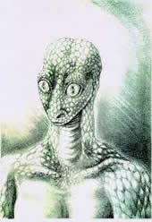
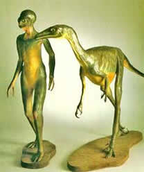
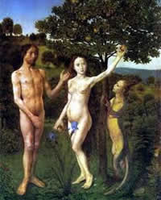
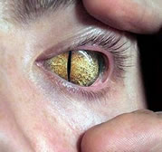
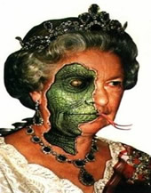
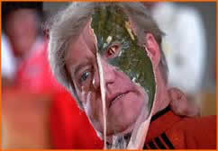

REPTILIANOS
Os Reptilianos são uma raça alienígena que está aqui nesta dimensão a muito mais tempo do que os seres humanos. Por isto eles se sentem donos deste planeta, sentem que tem o direito de mandar em todos nós. Sua aparência se assemelha com metade homem metade lagarto (réptil).
|  |  |  |
Para entender mais, vamos dar uma ligeira olhada nas histórias da criação do nosso planeta.
Segundo a Bíblia Deus criou o mundo e tudo o que há nele, em seis dias e no sétimo dia descansou.
Segundo a teoria da evolução de Charles Robert Darwin todo grupo de organismos descende de um ancestral comum. Os homens e os macacos atuais, por exemplo, divergiriam de um mesmo ancestral, há cerca de quatro milhões de anos. Todos os seres vivos descenderiam de uma simples e primitiva forma de vida – a chamada "ameba original" que por um processo constante de mutação evoluiu até chegar as formas de vida existentes hoje.
Segundo o livro de Chico Xavier “A Caminho da Luz”, Jesus (com a missão de Deus em criar um mundo onde as almas pudessem evoluir), criou o mundo junto com seres evoluídos, fazendo experiências/testes com formas orgânicas e materiais até o planeta terra se tornar propicio a existência humana.
Segundo fontes de informações seres evoluídos da sexta dimensão criaram este planeta para ser uma espécie de hospital-escola para as almas menos evoluídas, e os reptilianos (que vivem aqui na quarta dimensão e que querem dominar o universo) se "inscreveram como voluntários" para criar as formas de vida, no início do Planeta usaram seu próprio DNA para criar as formas de vida. Foi então que surgiram os dinossauros.
Quando as condições de clima, comida e etc. estavam benéficas, eles decidiram acabar com os dinossauros e dar lugar a espécies mais inteligentes, então foi usado um asteróide para os dinossauros entrarem em extinção.
Depois começaram a fazer experiências com animais, eis que surge o “homem macaco”. Com o passar da evolução surgiu o homem-de-Neandertal. O cérebro dos Neandertais eram aproximadamente 10% maiores em volume que os dos humanos modernos. Ou seja, eles eram mais inteligentes.
Os reptilianos não queriam uma raça que fosse inteligente, eles queriam o controle, os Neandertais foram vistos como ameaça e foram extintos. E as transformações continuaram até o homo-sapiens.
Diz-se que no começo todos os “protótipos” eram fêmeas (cromossomos XX) para procriarem através da patogenia (onde uma fêmea pode se auto-engravidar), pois eles queriam a procriação da espécie. Para criar o homem foi retirado uma parte dos cromossomos que então ficou como XY.
Resumindo nós seriamos um experimento genético feito para ser controlado, para que os Reptilianos possam entrar na quinta dimensão para dominar lá também. Eles controlam absolutamente tudo neste planeta e eles controlam os Illuminati.
A seguir depoimento de David Icke do site: www.umanovaera.com
Os reptilianos e outras entidades, que estão manipulando nosso mundo através da possessão de corpos "humanos", operam em freqüências entre a Terceira e Quarta densidades. Estas freqüências são referidas como "espaços escondidos e planos desconhecidos para o homem" nos aparentemente antigos Tabletes Esmeralda, que eu cito em "Crianças da Matriz". Para simplificar, eu me refiro a este "entre mundo" em meus livros como a mais baixa quarta dimensão.
É de lá que eles policiam nossa prisão vibracional - a Matriz - e buscam nos viciar e nos restringir aos sentidos físicos densos. Este mundo foi uma vez muito menos denso do que é hoje e a "queda" das freqüências, causadas pela manipulação de consciência encarnada e infiltração de DNA, tornou muito mais difícil de manter uma conexão multidimensional enquanto em forma física. Nós estamos agora em um ciclo de mudança quando a vibração deste "mundo" será elevada fora da atual densidade e retornará para onde esteve uma vez. Dessa forma, a habilidade dos reptilianos para manipular nossa forma física será removida, e é por isso que eles estão em tal pânico neste momento tentando impedir que esta mudança abra a porta da prisão vibracional.
Há pessoas que dizem que os maiores líderes do mundo sejam reptilianos disfarçados, ocupando cargos importantes para conseguir implementar a Nova Ordem Mundial através da Illuminati.
|  |  |  |